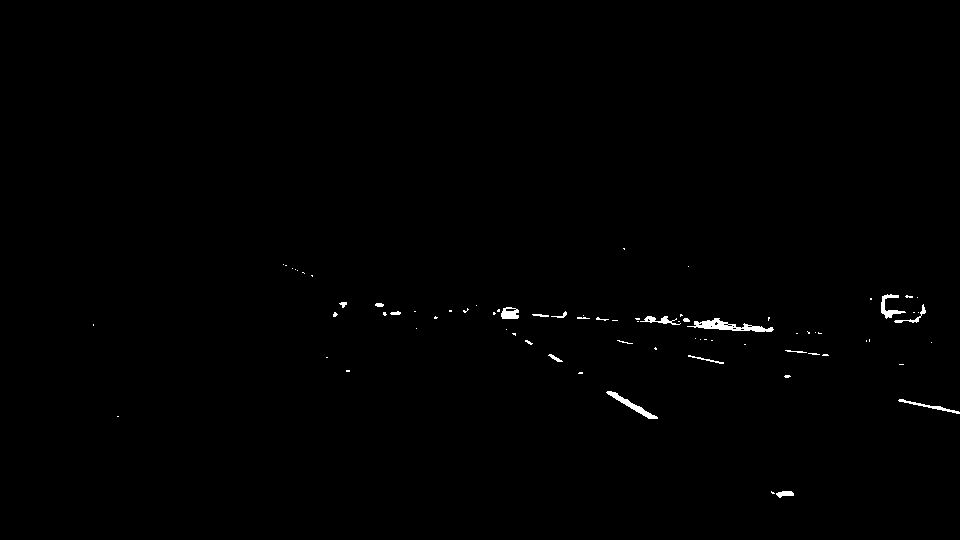
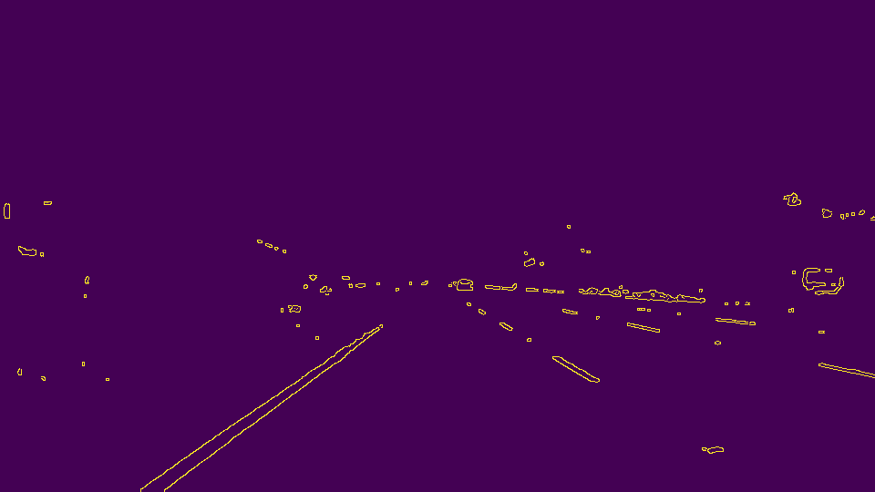
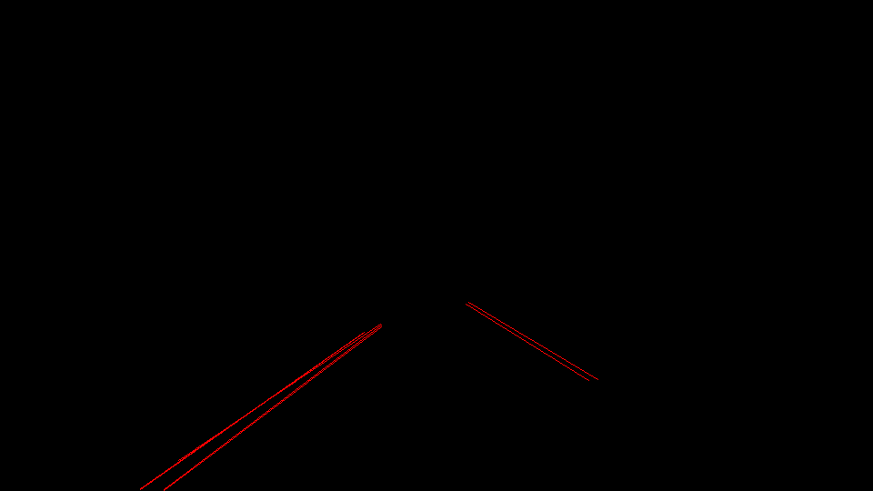
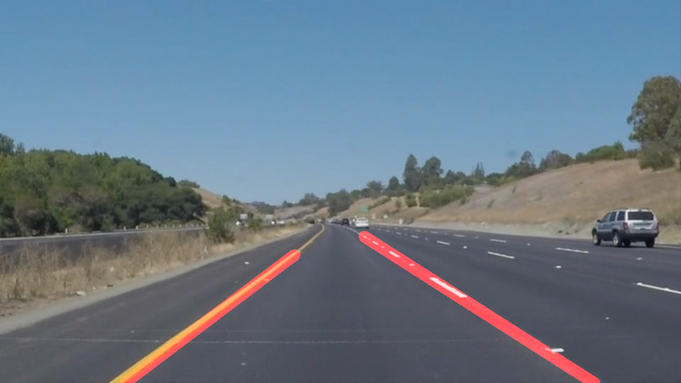

Finding Lane Lines on the Road
Here is a brief description of the image processing pipeline I built to detect the lines on both sides of the lane a car is driving in.

Reflection
1. Here are the few steps that each image goes through
My pipeline consists of of 9 steps. Let's see the result of each of them on this image.

- I extract an image with only the yellow component.
- I extract an image with only the white component.

- I extract a grayscale image.

- I merge these 3 images into 1. It visually gives the same image as above.
- I blur a little bit the image to smooth out the contours to enhance the result of the next step.
- I detect the edges (strong gradient in the pixel values) using the canny edges algorithm.

- I mask the region of the image where I do not expect the lines to be.
- I perform a hough transform to detect where the lines are.

- I average, extrapolate and filter the lines I obtain before drawing them on the image with a slight transparency. Here is the final result.
2. Potential shortcomings with my current pipeline
I detect the lanes quite far but I do not have stability when the road color changes. The lanes go far off target on the challenge.mp4 video. My other implementation where I do not take into account the grayscale image and only rely on the white and yellow images is very robust but do not detect the lanes as far. Here is the output on the same image :

I did not try to feed some video input where the car is changing lane. This would probably show how rigid my solution is (expecting a left and a right line).
I represent the lanes by straight lines. There is an obvious shortcoming to that representation: I do not extract information regarding the curve of both lines.
3. Suggest possible improvements to your pipeline
I have the problem that I do not detect the lines very far with the solution where I only use the yellow and white pixels of the image but since I have a very good stability and accuracy with this implementation, I could use that as "Ground Truth" and try to extrapolate both lines to detect further away with the input where I use the grayscale image.